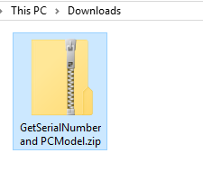
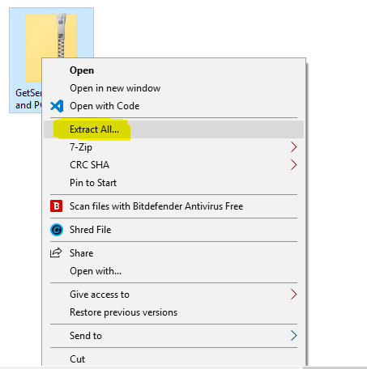
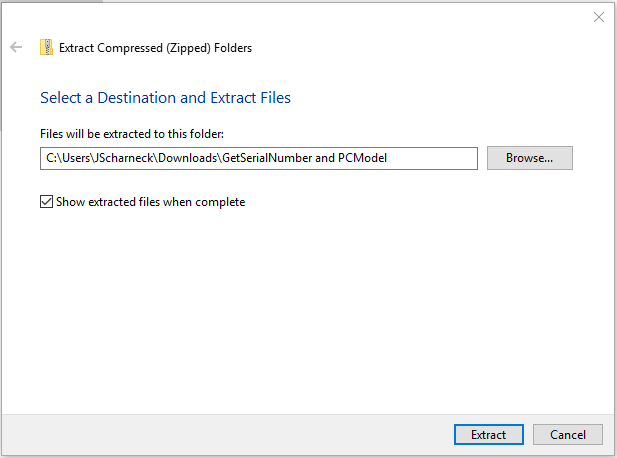
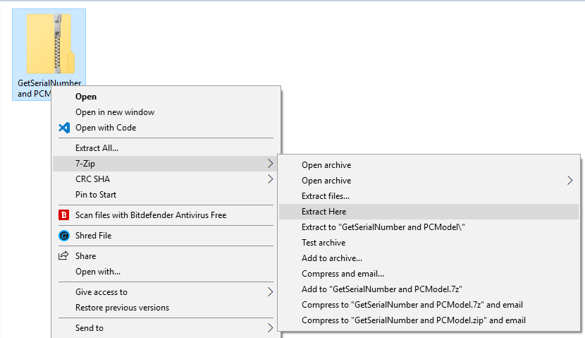
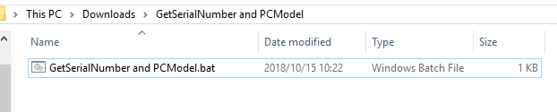
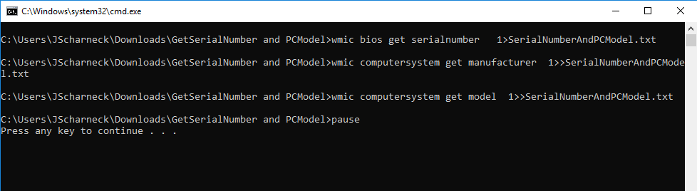

Get Serial Number and PC Model
1) Click the button below to download the program to get your laptop's serial number.
2) Select “Save/Save File”.

This should save the file in your "Downloads" folder.
3) Open your downloads folder and locate the downloaded file: "GetSerialNumber and PCModel.zip"

4) Right click on the file, select "Extract all”.

A popup window will appear asking you to "Select a destination and extract files":
 If you have 7zip installed on your laptop,Right click on the file, select 7-Zip and select “Extract here”.

This will put the file in the downloads folder, just look for it.
5) After extracting the zip file, you will see the file: "Get SerialNumber and PCModel.bat"
6) Double click on it and that will open the command prompt box which will look like this:
7) Press any key to continue.
A text file will pop up with your serial number as well as the laptop make and model.
Thereafter, please send these details back to me: jose@mcsza.com
Thank you.